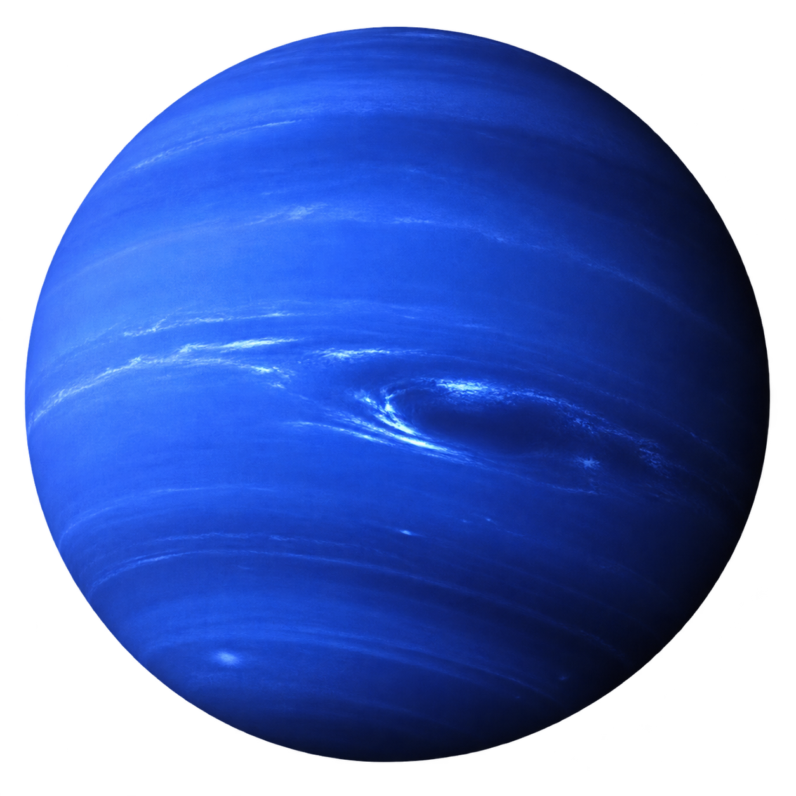
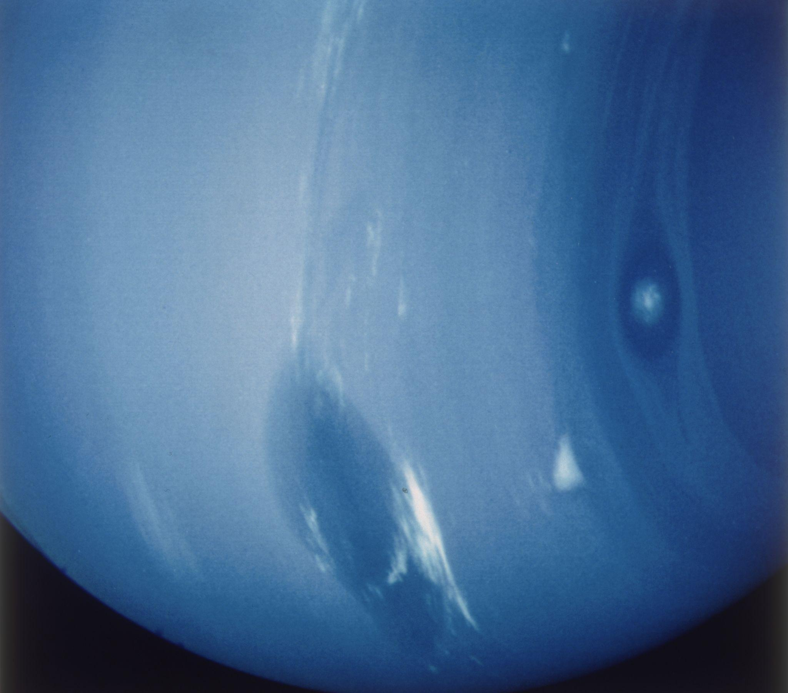

Dark, cold, and whipped by supersonic winds, ice giant Neptune is more than 30 times as far from the Sun as Earth. Neptune is the only planet in our solar system not visible to the naked eye. In 2011 Neptune completed its first 165-year orbit since its discovery in 1846.

Neptune is so far from the Sun that high noon on the big blue planet would seem like dim twilight to us. The warm light we see here on our home planet is roughly 900 times as bright as sunlight on Neptune.
With an equatorial diameter of 30,775 miles (49,528 kilometers), Neptune is about four times wider than Earth. If Earth were the size of a nickel, Neptune would be about as big as a baseball.
From an average distance of 2.8 billion miles (4.5 billion kilometers), Neptune is 30 astronomical units away from the Sun. One astronomical unit (abbreviated as AU), is the distance from the Sun to Earth. From this distance, it takes sunlight 4 hours and 10 minutes to travel from the Sun to Neptune.
One day on Neptune takes about 16 hours. Neptune makes a complete orbit around the Sun in about 165 Earth years.
Neptune's axis is tilted 28.32 degrees, which is similar to Earth's tilt of 23.44 degrees. This means that Neptune experiences seasons like Earth, but each season lasts for more than 40 years.
Neptune is one of two ice giants in the outer solar system (the other is Uranus). Most (80% or more) of the planet's mass is made up of a hot dense fluid of "icy" materials - water, methane, and ammonia - above a small, rocky core. Of the giant planets, Neptune is the densest.
Neptune does not have a solid surface. Its atmosphere (made up mostly of hydrogen, helium, and methane) extends to great depths, gradually merging into water and other melted ices over a heavier, solid core with about the same mass as Earth.
Neptune has 16 known moons. Neptune's largest moon Triton was discovered on Oct. 10, 1846, by William Lassell, just 17 days after Johann Gottfried Galle discovered the planet. Since Neptune was named for the Roman god of the sea, its moons are named for various lesser sea gods and nymphs in Greek mythology.
Triton is the only large moon in the solar system that circles its planet in a direction opposite to the planet's rotation (a retrograde orbit), which suggests that it may once have been an independent object that Neptune captured. Triton is extremely cold, with surface temperatures around minus 391 degrees Fahrenheit (minus 235 degrees Celsius). And yet, despite this deep freeze at Triton, Voyager 2 discovered geysers spewing icy material upward more than 5 miles (8 kilometers). Triton's thin atmosphere, also discovered by Voyager, has been detected from Earth several times since, and is growing warmer, but scientists do not yet know why.
Neptune has at least five main rings and four prominent ring arcs that we know of so far. Starting near the planet and moving outward, the main rings are named Galle, Leverrier, Lassell, Arago, and Adams. The rings are thought to be relatively young and short-lived.
Neptune's ring system also has peculiar clumps of dust called arcs. Four prominent arcs named Liberté (Liberty), Egalité (Equality), Fraternité (Fraternity), and Courage are in the outermost ring, Adams. The arcs are strange because the laws of motion would predict that they would spread out evenly rather than stay clumped together. Scientists now think the gravitational effects of Galatea, a moon just inward from the ring, stabilizes these arcs.
Back to Solar System